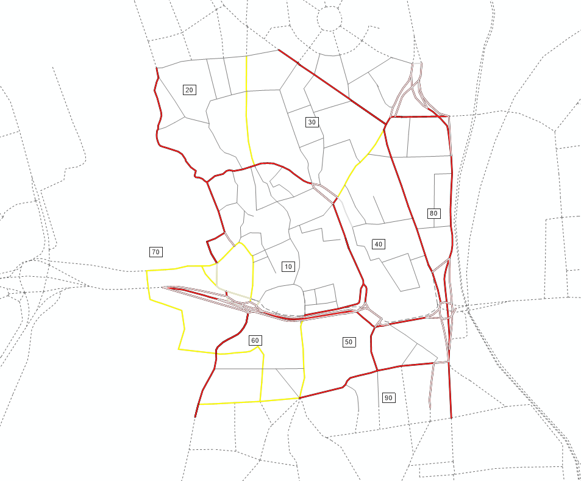
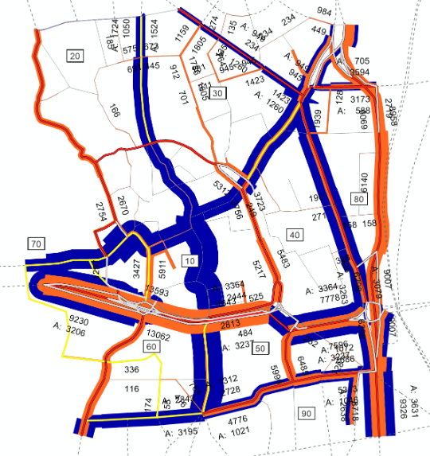
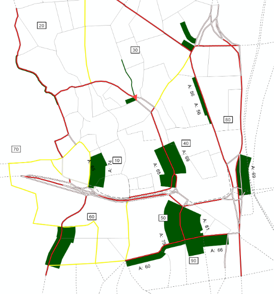
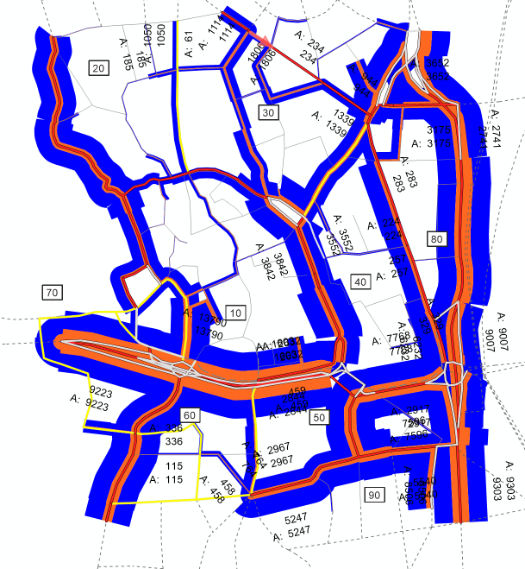

Course team · Transportation planning
Halle travel demand model
PTV Visum four-step model of nine central Halle zones and a six-link capacity scenario.
Transportation planning course team · PTV Visum and scenario analysisThe challenge
In CE 475, our team needed to turn the supplied Halle (Saale) travel data into a coherent model of Subarea 4, covering Altstadt and eight neighboring zones. The question was both where the modeled demand loaded the network and whether targeted capacity changes would relieve its most pressured links.
How we approached it
We worked through the four-step process in PTV Visum. We checked productions and attractions by zone, distributed trips with a travel-time-sensitive gravity model, estimated mode choice for car, public transport, and bicycle, and assigned motorized trips to the roadway. We used the origin-destination and trip-length results to interpret the pattern, then mapped assigned volumes and peak volume-to-capacity ratios. We tested one added lane in each direction on links 7287, 7284, 7197, 7066, 7068, and 7069 and compared the new assignment with the base case.
What the work showed
Altstadt was the strongest modeled attractor; the model calculated about 36,975 attractions and 21,433 productions across the subarea. The calculated car share was 86.2%, driven by the supplied matrices, with public transport at 8.4% and bicycle at 5.4%. Several radial links showed higher peak loading. The capacity test lowered volume-to-capacity on some links while loading others more heavily, showing why the network needs to be reassigned after a local change. Without observed counts, these are scenario outputs rather than validated forecasts.
Selected work
The mode shares reflect the supplied demand matrices, not observed travel behavior in Halle. Peak flows use an estimated factor from daily demand; observed counts were unavailable for external validation. Results are planning-level model estimates.



